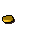
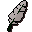
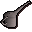
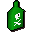
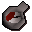
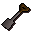

Ernest the Chicken
Scripts in
scripts/quests/quest_haunted/NPCs involved
Items involved

Coins
FeatherFish food
Oil can
Poison
Pressure gaugeRubber tube
SpadeInvolvement is derived from identifiers referenced by the quest scripts.